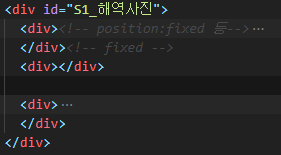

닫기
탐색기
▢ canvas카테고리모_음 : 1개, 여기서 title에 가지고올 id넣는곳
▢ canvas안의canvas_div모_음 : 1개, 카테고리목록에서 class가 canvas_div인 div들이 id를 가지고 대기중이다.
▢ main사이드와header관련none : 1개, main사이드(왼쪽) 클릭시 연결되는 문서들 집합
▢ main사이드와header관련none : 1개, main사이드(왼쪽) 클릭시 연결되는 문서들 집합
▢ S1_해역사_진 : 3개,
▢ 모은재료none상태 : 1개, S1_해역사_진 에서 많이 아래쪽, 개수기록시.
▢ 샘플 : 2개,
첫번째는 canvas안의canvas_div모_음 내부자료 맨 첫번째 장소로 이동,
두번째는 main사이드와header관련none 내부자료 맨아래쪽으로 이동,
▢
▢
▢
참고_ARRAY_OBJECT_JSON_구분정리_01_ARRAY
• 대괄호 []로 묶여있음, const cars = ["Saab","Volvo","BMW"];
참고_ARRAY_OBJECT_JSON_구분정리_02_OBJECT
• 중괄호 { }로 묶여있음, const preson = {firstName:"John",lastName:"Doe",age:50,eyeColor:"blue"};
• Key는 변수 취급. ex)document.querySelector('#연습').style.display='block;'에서
display부분과 value부분 'block;' ==> 각각 firstName, "John"부분이라고 보면 되겠다.
★ Key부분에 따옴표가 없는것에 주목!! 따옴표가 있으면 값(string), 없으면(숫자제외) string이 아니라는 의미!!
• 변수.Key 형태로 값을 호출한다. 배열처럼 [순번] 안됨. 괄호(순번)도 안됨
참고_ARRAY_OBJECT_JSON_구분정리_03_JSON
Sibling_Node_Element_tagName은대문자_TARGET순번확인
1. 공백이나 spacebar, 엔터가 있으면 text노드가 있는것이다.
2. Siblings are "brothers" and "sisters". : 같은 부모를 가졌다.
3. section에 엔터, div사이의 엔터에 text노드가 있는것이다.
4. parenNode는 무조건 element이고 최상위 element는 html이다.
5 .nextSibling, previousSibling : 주석노드나 텍스트노드인 경우가 있다.
6 .nextElementSibling, previousElementSibling : element만 다룬다
7. childNodes : childNode[0] 형식으로 선택한다. Text노드, 주석노드 포함
8. children : children[0] 형식으로 선택한다. Element만 다룬다.
★첫번째div안에 p가 하나인데 tagName을 확인하기
console.log(document.querySelector('#연습').children[0].children[0].tagName);
★첫번째div안에 p가 하나인데 다음(없는) sibling을 지정하면 error
console.log(document.querySelector('#연습').children[0].children[1].tagName);
console.log(document.querySelector('#연습').children[0].children[1].nextElementSibling.tagName);
요소.childNodes ==> 첫번째 자식들만, 주석노드, text노드, element노드
(엔터 또는 스페이스바 또는 텍스트=text 노드, 태그사이에 스페이스바나 엔터가 있으면 text로 인식된다.)
• console.log(document.querySelector('#S1_해역사진').childNodes);
NodeList(8) [text, div, comment, text, div, text, div, text]

0 : text ==> 첫번째는 text노드, 다음 div사이의 엔터
1 : div ==> 두번째는 div이다
2 : comment ==> 세번째 주석노드 : <!-- fixed -->부분
3 : text ==> 네번째는 text노드 : 엔터가 있다.
4 : div ==> 다섯번째는 div이다
5 : text ==> 여섯번째는 text노드 : 엔터가 있다.
6 : div ==> 일곱번째는 div이다
7 : text ==> 여덟번째는 text노드 : 닫는 div 앞에 엔터가 있다.
length=8;
tagName은 대문자! 예)태그이름이 input인경우 (★스크립트는 대소문자 구분!)
var 태그이름=document.querySelector('#연습').tagName);
console.log(태그이름); ==> 'INPUT'
if (태그이름=='INPUT') ==> true
if (태그이름=='input') ==> false
target 순번확인 : target표시 > parentNode올라가서 children 순회하여 표시 찾기
zip파일 다운로드 ==> 풀기, SD.exe 실행, 우클릭 메뉴 활용
줄바꿈_배분정렬과wordBreak_overflow_nowarp_whitespace_aligntop_요소내줄간격
1. p등 문장 길어질때 처리. ★본인과 자식에게 모두 적용됨.
넘김 ==> white-space:normal; 넘기지 않음 ==> white-space:nowrap;
2. 넘기지 않을때 넘치는 부분 처리
넘치는곳 숨김 ==> overflow:hidden;
넘치는곳 숨김 + ... 처리 ==> overflow:hidden; text-overflow:ellipsis;
3. 문장정렬 text-align ==> left,right,center,justify양쪽정렬,start,end
줄바꿈 기준이 단어이기 때문에 균등분할시 길이가 큰 단어가 넘어갈때 공백이 커진다.(보통 영문의 경우)
4. 줄바꿈 기준 : word-break, 기본값 normal, 상속 yes
CJK(Chinese - Japanese - Korean, 중국·일본·한국)는 일본어, 한국어, 중국어를 통틀어 이르는 말
normal : CJK 문자는 글자 기준(break-all)으로, CJK 이외의 문자는 단어 기준으로 줄바꿈합니다.
• 단어기준 keep-all과 글자기준 break-all 예시 : 한글 기본값이 글자기준이라고 했는데 예시예시예시예시예시예시긴단어가걸릴때확연히알수있다 (이것은 keep-all : 단어기준)
• 단어기준 keep-all과 글자기준 break-all 예시 : 한글 기본값이 글자기준이라고 했는데 예시예시예시예시예시예시긴단어가걸릴때확연히알수있다 (이것은 keep-all : 단어기준)(추가로 배분정렬 적용 : text-align:justify; 양끝단을 맞추며 공백이 늘어남)
• 단어기준 keep-all과 글자기준 break-all 예시 : 한글 기본값이 글자기준이라고 했는데 예시예시예시예시예시예시긴단어가걸릴때확연히알수있다 (이것은 break-all : 글자기준)
• 단어기준 keep-all과 글자기준 break-all 예시 : 한글 기본값이 글자기준이라고 했는데 예시예시예시예시예시예시긴단어가걸릴때확연히알수있다 (이것은 break-all : 글자기준)(추가로 배분정렬 적용 : text-align:justify; 양끝단을 맞추며 공백이 늘어남)
break-all : 글자 기준으로 줄바꿈합니다.
keep-all : 단어 기준으로 줄바꿈합니다.
initial : 기본값으로 설정합니다.
inherit : 부모 요소의 속성값을 상속받습니다.
5. 한 줄에 inline-block, inline 요소가 여러개 있을때 맨 윗단 정렬 ==> vertical-align:top;
6. 요소내 줄간격 ==> line-height:20px; 아래 20px와 30px 예시, 줄과 줄사이의 거리
• 단어기준 keep-all과 글자기준 break-all 예시 : 한글 기본값이 글자기준이라고 했는데 예시예시예시예시예시예시긴단어가걸릴때확연히알수있다 (line-height:20px;)
• 단어기준 keep-all과 글자기준 break-all 예시 : 한글 기본값이 글자기준이라고 했는데 예시예시예시예시예시예시긴단어가걸릴때확연히알수있다 (line-height:30px;)
• margin 값은 공통적으로 포함하지 않는다.
• clientHeight : content영역 + padding 영역, border 제외, scroll 아래 제외
• offsetHeight : content영역 + padding 영역 + border 영역, , scroll 아래 제외
• scrollHeight : content영역 + padding 영역 + border 영역 + 숨겨져 있어도 scroll 전체 포함
• offsetHeight : CSS로 요소의 높이를 지정할 때 정해지는 높이입니다.
패딩과 테두리가 포함되며, "box-sizing" 모델 속성 값에 따라 패딩과 테두리 값이 제외될 수 있으므로 주의해야 합니다.
요소가 감춤 상태인 경우 offsetHeight는 0을 반환합니다.
▢ 인라인에 onclick동작있을때 이벤트리스너 동작은?
이벤트리스너 걸어놓으거 먼저 동작후, 버튼에 걸려있는 onclick동작
▢ 같은 element에 각각 다른 이벤트를 걸수있다. ex)click, dbclick, change
★★ 클릭한 요소의 순서 : e.target.classList.add해주고 찾는형식??
▢ 이벤트리스너 이벤트 종류
1. textarea안에 초기화시 기록된값=요소.innerHTML, textarea안에 현재 기록된값=요소.value
2. <textarea placeholder="내용을 입력해 주세요." /> placeholder태그 사용시 가로세로 조절가능
3. 내부TEXT선택, textarea와 input에서만 : 요소.select();
4. 선택범위 text 복사(클립보드) : document.execCommand('copy');
5. string.split(separator, limit); 탭과 줄바꿈,'limit'은 최대 분할 개수를 나타내며, 필수 값이 아닙니다.
탭으로 분리된 것 : split("\t"), 탭문자 자체를 넣어도 됨
줄바꿈 된 것 : split("\n")
• 찾을값이 포함된 문자열과 찾을값을 모두 대문자로 바꿔서 search, find 사용
var 검색할문자열=document.querySelector('#전체검색input').value.toUpperCase();
• search : 없으면 -1, 첫번째면 0, 대소문자 구분.
if (검색할버튼클래스들[i].innerHTML.search(검색할문자)>-1) {
• find : 배열안에 찾을값이 있는지 확인. arr.find(callback(element, index, array), thisArg)
• 대소문자 구분, 전체일치.
find 함수는 배열의 요소를 순차적으로 순회하면서 조건에 일치하는 요소의 값을 즉시 반환합니다.
조건을 일치하는 경우가 없다면, undefined를 반환합니다.
arr : 순회하고자 하는 배열, element : 현재배열의 요소, index(생략 가능) : 현재 배열 요소의 index,
array(생략 가능) : filter 함수를 호출한 배열, thisArg(생략 가능) : callback을 실행할 때
this로 사용되는 값(=map 함수에서 사용될 this값)
필요할때 다시 공부하고, 현재 사용해본 형식에 대한 설명이다.
var 배열=[];//빈배열 선언, 또는 미리 만들어도 됨 ['문자열1','문자열2','문자열3',....]
정확히 일치하는 값이 있으면 '해당 문자열'이 반환되고, true 조건으로 활용가능.
• match : 1.대소문자구분, 2.대소문자구분없이 "i"
대소문자 구분 : "i" 부분이 대소문자 구분하지 않는다는 조건이다. searchVariable=찾을문자열
String.match(new RegExp(searchVariable, "i"));
대소문자 구분. searchVariable=찾을문자열
String.match(new RegExp(searchVariable));
• match 예시 : 문자열.match(찾을 단어)
?? let reg = [/\w+java\w+/g, /java\w+/] : 정규식 나중에... 모르겠다.
• 활용 : 위 정보에서
console.log(str.match('rld')); // ==> ['rld', index: 8, input: 'hello world', groups: undefined]
※결과는 하나의 배열을 가진다. index와 input은 속성처럼 접근가능하다.
• 어떻게 활용 가능한가 : 요소의 innerText를 담으면 하위의 하위 요소의 모든 문자열을 합친 하나의 문자열이다.
▢ 문자열 안에 \n (줄바꿈) 있으니 활용 가능.
1.if (문자열.search(검색할문자)>-1) {...}
2.find는 완전일치, 일부일치 확인은 search와 match, search가 가벼울듯.
• 세 가지 함수의 인수 중 대괄호([]) 부분은 생략이 가능하며, 생략할 경우 시작 위치부터 문자열 끝까지 자른다.
• str.substr(start[, length]) : 시작위치에서, 몇글자를 자른다.
var str = '자바스크립트';
• str.substring(indexStart[, indexEnd]) : 왼쪽은 0부터시작, 오른쪽은 1부터시작, 시작위치부터 끝위치까지
var str = '자바스크립트';
• str.slice(beginIndex[, endIndex])문자열을 뒤에서부터 자르기 위해서는 slice() 함수를 사용하면 효율적이며
타 언어의 Right 함수와 비슷하다고 생각하면 된다.
var str = '자바스크립트';
이것만 이해하자
▢ 필수 : #전체대체(외부배치), 전역변수 '보기셑팅유형' ==> 숨길꺼 보일꺼 설정하는 function 보기셑팅()
• 보기셑팅함수 간단 보기
function 보기셑팅() {
출처 : https://curryyou.tistory.com/328
• Canvas 객체의 toDataURL()함수를 통해 캔버스에 그린 그림을 문자열 형태로 변환할 수 있는데,
Canvas에 그려진 내용을 Data URL로 변환한 것이기 때문에 그 자체로 이미지 정보가 된다.
Canvas에 그려진 내용을 문자열로 변환하여 img요소의 src로 사용할 수 있다.
<img id="myImage">
• setInterval(콜백함수,시간)는 "시간(ms)"를 간격으로 "콜백함수"를 반복 호출 하는 함수이다.
1. setInterval()함수의 반환값을 변수에 할당하여 반복시작
let 변수=setInterval(콜백함수,시간);
2. clearInterval(변수)로 반복 중단
clearInterval(변수);
3. setInterval()함수의 반환값을 변수에 재할당하여 재시작
변수=setInterval(콜백함수,시간);
닫기
닫기
닫기
▢ 중범선 점진/균형/용맹/비상 수량 정리표 [점진먼저 물교용, 다음목표 용맹]
▢ 중범선 점진/균형 : 일리아 물교퀘 3회로 변경 (라비켈 I,II, 세렌디아 병사)
▢ 중범증축 녹+파템강화 온기,한기 / 중범이후, 토로강화 햇빛달빛, 치로강화 노을스톤
1.온기, 한기스톤 : 중범증축시 녹템과 파템강화. 파템시 온기 35, 한기 80개 준비.
2.햇빛, 달빛스톤 : 온기,한기 10개 + 별빛수정[100주화] 가열하기
[토로강화용!] 온기280, 한기360, 별빛수정66(6천6백) 일단 준비!! 주간퀘3종 온기180, 한기90 어린칸디둠 : 달의 비늘이 새겨진 합판 10, 일반 : 온기14 or 한기7 or 100까주 어린나인샤크 : 달의 핏줄이 새겨진 아마포 3, 일반 : 온기14 or 한기7 or 100까주 어린검무쇠 : 심해의 눈물 1, 일반 : 온기14 or 한기7 or 100까주 : 중범 녹템인 토로장비 강화. 햇빛=200주화, 달빛=300주화 가치!!!
3.토로 강화 햇빛, 달빛 : 4피스 개당 1만 까주. 강화는 햇빛, 달빛
4.치로 강화 노을스톤 : 햇빛, 달빛 1개 + 별빛 가루[노드]10개, 일리야에서 부품공방 제작.
5.치로장비 4부위 ★만들때 토로10강과 맞는 허가증+★ 파트별로 100개씩[총1200개] 다음 3가지 재료가 들어간다.
• 난폭한 파도가 새겨진 합판(350주화)[공작] : 난폭한 해양 괴수의 비늘 1, 바다 악어의 비늘.
• 정교하게 다듬어진 지지대(350주화)[공작] : 난폭한 해양 괴수의 뼈 1, 별빛 강화제(250주화) 1.
• 파도의 흔적이 담긴 접착제(350주화)[간이연금] : 난폭한 해양 괴수의 진액 1, 별빛 유화제(250주화) 1.
350 X 1200 = 42만 주화
치로만드기전에 몇년간 토로 쓸듯!!!, 매일 2000주화 모은다면 210일!!! 6.무역선[녹템10강]과 중범선점진 녹템(토로10강) 비교[무게위주] : 증축시 속도10%, 회전과 가속 5% 증가.
• 무역선 일반무게 : 11500 • 무역선 과적무게 : 19550 중범선점진 녹템(토로10강) 비교[무게위주], 선원300*5:1509 포함 계산
• 중범선 점진 일반무게 : 20900, 2단(800):24개, 3단(900):21개, 4-5단(1000):19개 • 중범선 점진 과적무게 : 35530, 2단(800):42개, 3단(900):37개, 4-5단(1000):34개
▢ 토로 햇빛, 달빛 강화확률 : 9에서 10강할때 32스택에 50% : 부위당 7(28) / 9(36) 정도 [토로강화용!] 온기280, 한기360, 별빛수정66(6천6백) 일단 준비!!
▢ 구축함 파템 온기,한기 강화확률 파템강화시 온기 35, 한기 80개 준비.
온기를 품은 블랙스톤 - 실패시 내구도 5 감소
강화
비고
강제강화
+1
10스택 60%
블스5 / 내구15
+2
14스택 60%
블스6 / 내구20
+3
20스택 60%
블스7 / 내구25
+4
30스택 60%
블스10 / 내구35
+5
30스택 48%
블스13 / 내구40
한기가 서린 블랙스톤 - 실패시 내구도 10 감소
강화
비고
강제강화
+6
30스택 40%
블스23 / 내구100
+7
30스택 20%
블스46 / 내구100
+8
30스택 12%
블스76 / 내구100
+9
40스택 10%
블스115 / 내구100
+10
50스택 6%
블스230 / 내구100
▢ 재갱은 설렁설렁하자[스트레스 받음] 화려한 위주로 재갱받고 일갱 까주중심 품목채우기 위주로...
1. 까주런 및 재료교환 후에 4,5단 채워주기 해야하는데 하게 되면
일반재료는 교섭력이 모자라서 못하게되고 가끔 채워주는 형식으로 한다.
[물교품은 1단50 이상유지, 2단 100, 3단 100, 4단 50, 5단 5-10정도 유지] 2. 화려한 2종, 콕스전투, 빛나는 코발트 주괴, 대양의 견고한 현철,
해저 단괴, 심해초줄기, 햇빛달빛스톤(비쌈)
1.
일
형
2.
심
▢ 1.벨리아 출발 준비
1. 에페리아 3종 : 골몬대소, 해카루, 항해경험치
2. 벨리아 나루터지기 : 고등어, 골몬대소, 해카루 항해경험치
벨리아 나루터지기 : 택배(일리아 : 1시간)
벨리아 로비니아 : 택배(틴베라 : 25분) ★출발직전 받기★
벨리아 주점주인 : 굶주린 해양생물, 콕스해적단 처치
벨리아 주점 미아 : 택배(틴베라)
▢ 2.일리아 도착
1. 나루터지기에 일리아 택배 퀘 완료하고, 오킬라아 택배 퀘 수주(1시간)
▢ 3.오킬루아 도착
1. 나루터지기에 오킬 택배 완료하고
2. 나루터지기 퀘3종, 병사 퀘3종 수주
▢ 4.대양 몹 잡고 오킬루아 복귀
1. 나루터지기 퀘3종 완료, 병사 퀘3종 완료
2. 큐리오 쪽으로 가다가 언덕 오르면 말 불러서 큐리오 퀘 2종 완 (산호조각 10, 오색 산호조각 1)
언덕위에 시후람에게 벨리아(선택) 택배퀘 수주받고 ★택배 받기★
황새치 잡았으면 낚시퀘 수주 및 황새치 1개 주고 퀘 완료
▢ 5.벨리아 복귀
▢ 파템제작 순서(증축전에 사용하기 위함) : 1. 함포, 2. 선수상(속도), 3. 돛,장갑은 재료 되는대로.
▢ 파템제작되면 강화 : 1~5단=온기를 품은 블랙스톤(10주화)[2~4단물물교환], 6~10단=한기가 서린 블랙스톤(20주화)[2~4단물물교환] [녹템 강화도 같은거 쓴다]
▢ 무역선(노템), 무역선(녹템10강), 무역선(★파템10강★), 중범선_점진(노템),중범선_점진(녹템10강),중범선_점진(★파템10강★)
▢ 구축함(노템), 구축함(녹템10강), 구축함(★파템10강★), 중범선_용맹(노템),중범선_용맹(녹템10강),중범선_용맹(★파템10강★)
▢ 구축함과 무역선 비교 (중범선 점진, 비상 비교), 치로 강화시 : 1,2,3,4에 50쓰고, 5,6,7,8에 80쓰고, 9,10에 100쓰고
▢ S1_무역선파템.png, S1_중범선노템.pn, S1_중범선녹템.png, 일퀘 36일째에 제작, 각목류 모잘랐음 (괄호는 선원, 나의장비, 나의레벨 능력치)
▢ 레마섬과 까마귀 둥지, 온기를 품은 블랙스톤(10주화), 한기가 서린 블랙스톤(20주화)
▢ CANVAS 선긋기